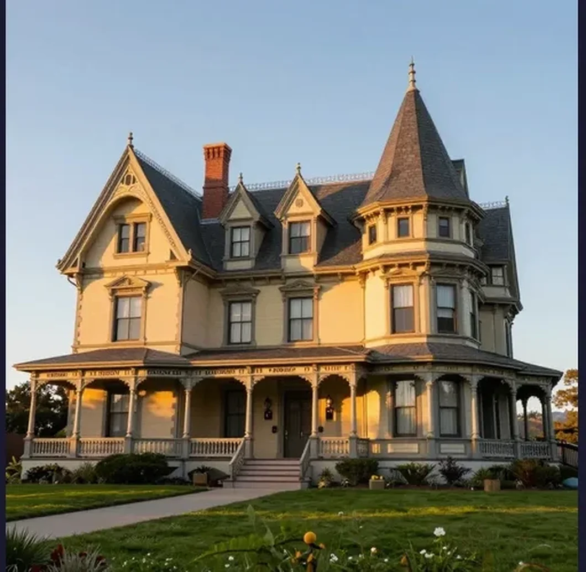

The Winchester Mystery House: Decades of Building, Staircases to Nowhere, and an Heiress Changed by Grief

A farmhouse that kept growing
Imagine that you stand on a country road near San Jose, California, in 1886. In front of you is a plain farmhouse with eight rooms. A quiet widow named Sarah Winchester has just bought it.
She hired carpenters, and the building began. It did not stop for more than thirty-five years. When Sarah died in September 1922, the little farmhouse had become a mansion with 160 rooms.
It was a maze. One staircase led up to a ceiling. Some doors opened onto nothing at all. People came to call it the Winchester Mystery House, and it is one of the strangest buildings in America.
So why did a woman build and build for so long? Let us start with who she was.
A fortune and two great losses
Sarah Lockwood Pardee was born in 1839 in New Haven, Connecticut. Her family was well off, and she was well educated. In September 1862, she married William Wirt Winchester. His father, Oliver Winchester, ran the Winchester Repeating Arms Company.
The company made rifles. Its Model 1873 was called “The Gun That Won the West.” It was a lever-action repeating rifle, which means that it could fire many shots without reloading. Settlers and lawmen used it, and the company grew very rich.
But Sarah’s marriage was marked by sorrow. In the summer of 1866, her only child, Annie, died when she was only a few weeks old. The cause seems to have been marasmus, a serious illness in which a baby wastes away from lack of food. Sarah never had another child.
Then, in March 1881, William died of tuberculosis, a lung disease. In less than twenty years of marriage, Sarah had lost her daughter and her husband.
Now she was rich, alone, and deep in grief. Many books say that she inherited about $20 million. Some historians say that this number is far too high. But she owned shares in the family company, and they paid her a large income every year.
So she moved west. She came to California in 1884, and two years later she bought the farmhouse. What happened next is told in a famous story.
The tale of the curse
Here is the story that most people know. After William died, a medium in Boston told Sarah that she was cursed. A medium is a person who claims to speak with the spirits of the dead.
The medium said that the spirits of everyone killed by a Winchester rifle wanted revenge. They had already taken her baby daughter and her husband. There was only one way to calm them. Sarah must move west and build a house, and she must never stop.
If the sound of hammers never stopped, the spirits would be quiet, and Sarah would live. If she stopped, she would die. That is why, says the tale, the building went on and on.
It is a wonderful ghost story. But is it true?
Where did the story come from?
Historians have looked for the medium in the tale. They have found no record of this person. Many doubt that the visit ever happened.
The version that people tell today can be traced back to a book from 1967. That is more than forty years after Sarah died. Some newspapers did hint at spirits and a curse while she lived. But nothing from her own time shows that she went to such a medium.
Some historians think that the ghost tales helped to sell tickets. The house was bought by a group of investors after Sarah died. They opened it to visitors in 1923. A house with a ghost story is easier to sell.
So the tale is weak. Still, the house is real, and its oddities are real too. Let us visit some of them.
Stairs to a ceiling, and a lucky number
You may have heard that the house is full of tricks to fool ghosts. Historians say that this is not so. One staircase does stop at a ceiling, and some doors do open onto nothing. But these oddities came from constant changes during the building, from earthquake damage, and from outer walls that were closed up as the house grew. They were probably not meant to fool spirits.
Then there is the number 13. Legend says that the house has 13 bathrooms, staircases with 13 steps, and windows with 13 panes. A carpenter who worked there said that many of these 13s were added after Sarah died. The idea first appeared in a magazine article in 1929. Only some drain covers have 13 holes.
One small room is often called the Séance Room. A séance is a meeting held to try to talk with spirits. Tour stories say that Sarah held séances there every night. But her staff said that she had no interest in séances, and no records of any exist. Records show that the room was used by her gardener.
Sarah seems to have directed the work herself, and she worked without an architect. One historian thinks that this was because the architects she hired were not as good as she was used to.
Yet in 1906, a great shock hit the house.
The day the tower fell
On April 18, 1906, the San Francisco earthquake struck the Bay Area. It was one of the worst in American history. The Winchester house shook hard. The seven-story tower in its center collapsed, and much of the house was badly damaged.
Some tellings say that Sarah was trapped in a room for hours before she was rescued. There is no evidence for this. One source says that she may have been living somewhere else at the time.
She never rebuilt the tower. But the house was far from finished, and she went on adding to it for sixteen more years.
When she died at the age of 83, her house held 47 fireplaces and 17 chimneys. It also held many unfinished rooms, sealed passages, and dead ends. Yet it also showed a woman who was not simply mad. It had an elevator, added in 1916, which was a modern comfort for its time.
So what was she doing all those years?
Why did she keep building?
No one can say for sure, because Sarah never explained. But historians have found plainer answers than a curse.
The first is grief. Building gave her a project and a reason to get up each morning. The house may have been a monument to loss that could never be finished, because the wound could never heal.
The second is a love of design. Sarah was rich and clever. She had no training in architecture, but she seems to have been truly interested. The house may be decades of playful tests, with no limit on money or time.
The third is habit. She may simply have kept building because she enjoyed it and had the money. After many years, stopping may have felt strange.
The fourth is privacy and control. The maze-like layout suggests a woman who valued her privacy. Many staircases helped people move through a big house. A broken-up plan may have let Sarah decide exactly who went where.
There may be some truth in all four.
When the hammers stopped
After Sarah died, the house opened to the public in 1923. It became a California Historical Landmark in 1925, and it joined the National Register of Historic Places in 1974. It is still a popular sight in the San Francisco Bay Area. In 2018, a horror film called Winchester told a ghostly version of her story, with Helen Mirren as Sarah.
So what do we know? A widow bought an eight-room farmhouse in 1886 and built for more than thirty-five years. The curse story has no support from her own time. The house is real, and its odd stairs and doors have plainer reasons than ghosts.
What is open is the reason in her heart. Sarah never explained, as far as we know. She built, room after room, until her death in September 1922. Then the hammers stopped, and the farmhouse near San Jose was a mansion of 160 rooms. Why she built, we may never fully know.
References & Further Reading
📚 Recommended Reading: Captive of the Labyrinth: Sarah L. Winchester, Heiress to the Rifle Fortune by Mary Jo Ignoffo (on Amazon) — As an Amazon Associate, we earn from qualifying purchases.
Editorial note: Sarah Winchester was a real, rich widow who built this strange house for many years. The medium and curse story cannot be proved, and many details told on tours, like the 13s and the séance room, are doubtful. See our Editorial Policy.